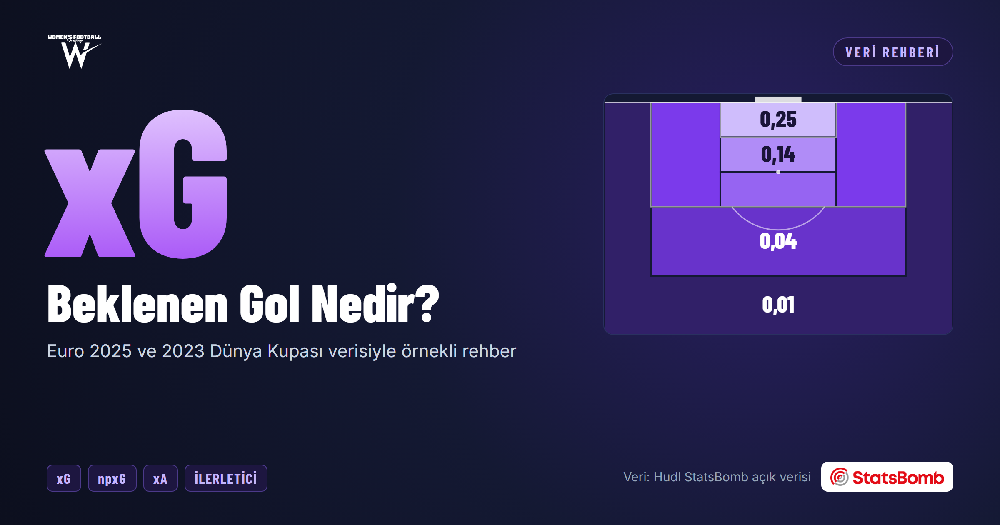
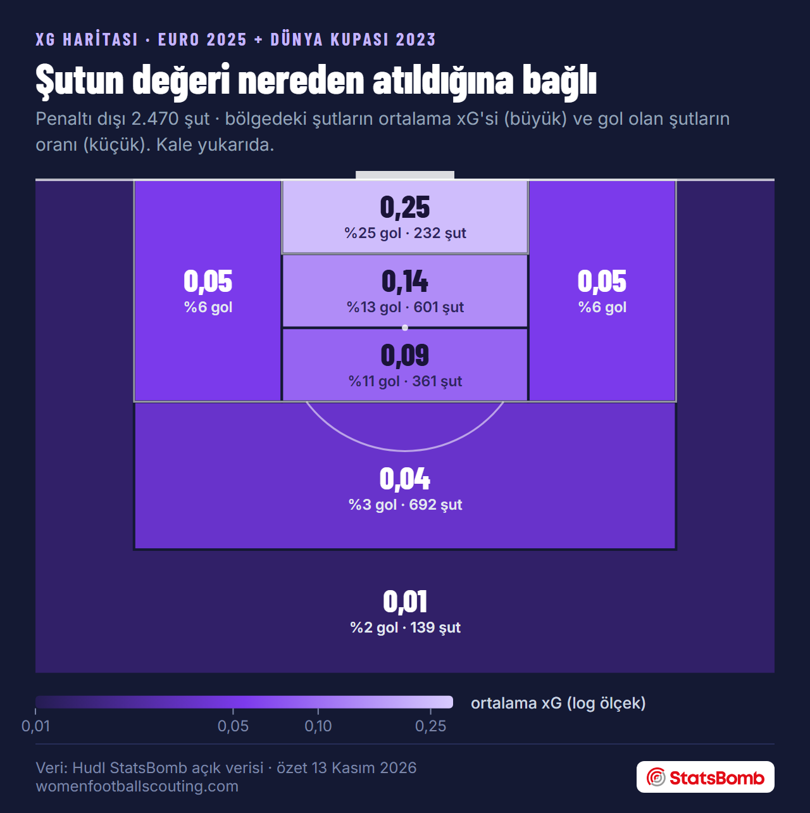

xG Nedir? Euro 2025 ve 2023 Dünya Kupası Verisiyle Beklenen Gol
Bir şutun gol olma ihtimali nasıl ölçülür, bir oyuncu iyi bitirici mi yoksa şanslı mı? Kadınlar Euro 2025 ve 2023 Dünya Kupası'ndaki 2.511 şutla beklenen golü (xG), penaltısız xG'yi, beklenen asisti (xA) ve ilerletici aksiyonları örneklerle anlatıyoruz.

Dünya Kupası 2023 · 64 maç
özet 13 Kasım 2026
Futbolda skor tabelası çoğu zaman yalnızca sonucu söyler. Bir takım üç büyük fırsatı kaçırıp tek bir uzak şutla kazanabilir; bir forvet bir turnuvayı golsüz bitirip yine de doğru yerlerde bulunmuş olabilir. Beklenen gol (xG) bu ikisini ayırmak için kullanılan ölçülerin başında gelir.
Örneklerimiz Hudl StatsBomb'un herkese açık olay verisinden: Euro 2025'in 31 ve 2023 Dünya Kupası'nın 64 maçı. Önce xG'nin ne olduğuna bakacağız, sonra penaltısız xG'ye, beklenen asiste ve ilerletici aksiyonlara; hepsine gerçek örneklerle.
01xG: bir şutun gol olma ihtimali
Beklenen gol (expected goals, xG) her şuta 0 ile 1 arasında bir değer verir. Bu değer, benzer koşullarda atılmış çok sayıda şutun ne kadarının gole döndüğünü söyler: 0,25 xG'lik bir şut, aynı yerden ve aynı şekilde atılan her dört şuttan birinin gol olduğu anlamına gelir. xG şutun kalitesini ölçer, şutu atanın kim olduğunu değil.
StatsBomb'un modeli şutun yerine ve açısına, vücudun hangi bölümüyle vurulduğuna, şutu hazırlayan pasın türüne ve şut anında kalecinin ve savunmacıların nerede durduğu gibi bilgilere bakar. Bir oyuncunun ya da takımın xG'si, attığı şutların değerlerinin toplamıdır.

Harita kuralı açıkça gösteriyor. Altı pas içinden atılan şutların ortalama değeri 0,25 xG ve bu şutların gole dönme oranı %25. Penaltı noktası çevresinde ortalama 0,14 xG'ye iniyor. Ceza sahası dışına, kalenin tam önüne çıkıldığında değer 0,04 xG: iki turnuvada penaltı dışı şutların %34 kadarı ceza sahası dışından atıldı, ama bu şutlar gollerin yalnızca %12 kadarını getirdi.
Penaltı modelde sabit bir değerle ölçülür: ortalama 0,78 xG. İki turnuvada normal süre ve uzatmalarda 41 penaltı kullanıldı, 28 tanesi gol oldu. Penaltı dışındaki 488 kafa vuruşunun ortalaması 0,11 xG, gole dönme oranı %10.
Ortalama xG ile gerçekleşen oran her bölgede birbirine yakın; model işini yapıyor. Ama tek bir şut için xG bir ihtimaldir, sonuç değildir.
02npxG: penaltıyı ayrı tutmak
Penaltı, oyunun içinden yaratılan bir fırsattan çok bir kuralın sonucudur ve tek başına 0,78 xG ekler. Penaltıyı kullanan oyuncunun toplamı bu yüzden kolayca şişer. Oyuncuları karşılaştırırken penaltısız xG (npxG) kullanılır; gollerde de penaltı golleri çıkarılır.
Euro 2025'ten iki örnek: Ada Hegerberg'in toplam xG'si 3,57, npxG'si ise 2,01. Aradaki fark iki penaltıdan geliyor. İki penaltı da kaleyi bulmadı: biri İsviçre karşısında (grup maçı), diğeri İtalya karşısında (çeyrek final). Hegerberg'in iki golü de penaltı dışından geldi. Alexia Putellas'ın xG'si 2,52, npxG'si 1,74: İsviçre karşısındaki çeyrek finalde kullandığı tek penaltıyı kaleci kurtardı.
03Euro 2025: beklentinin üstünde ve altında kalanlar
Turnuvanın en yüksek npxG'si Esther Gonzalez'e ait: 24 şutta 4,02 npxG ve 4 gol. Beklentiyle sonuç neredeyse aynı; 4 golle turnuvanın en golcü oyuncusu da o. Stina Blackstenius 2,98 npxG'den 3 gol çıkardı.
![Euro 2025'te en yüksek npxG'ye ulaşan 12 oyuncu: Esther Gonzalez (İspanya): npxG 4,02, penaltısız gol 4; Stina Blackstenius (İsveç): npxG 2,98, penaltısız gol 3; Alessia Russo (İngiltere): npxG 2,41, penaltısız gol 2; Ella Toone (İngiltere): npxG 2,32, penaltısız gol 2; Cristiana Girelli (İtalya): npxG 2,24, penaltısız gol 3; Marie-Antoinette Katoto (Fransa): npxG 2,13, penaltısız gol 2; Ada Hegerberg (Norveç): npxG 2,01, penaltısız gol 2; Alexia Putellas (İspanya): npxG 1,74, penaltısız gol 3; Lea Schüller (Almanya): npxG 1,70, penaltısız gol 2; Lauren Hemp (İngiltere): npxG 1,55, penaltısız gol 1; Klara Bühl (Almanya): npxG 1,39, penaltısız gol 0; Lauren James (İngiltere): npxG 1,36, penaltısız gol 2.](euro-2025-gol-xg.png)
Cristiana Girelli npxG'si 2,24 iken 3, Alexia Putellas npxG'si 1,74 iken 3 penaltısız gol attı. Ters uçta Klara Bühl var: 24 şut ve 1,39 npxG'ye rağmen turnuvayı golsüz bitirdi.
Grafiğin dışında daha çarpıcı örnekler de var. Signe Gaupset 8 şutun toplam 0,39 npxG'sinden 2 gol, Victoria Pelova 5 şutun 0,41 npxG'sinden 2 gol çıkardı. Bu kadar az şutta bir-iki gollük fark, bitiricilikten çok şansın (istatistikteki adıyla varyansın) sonucu olabilir.
Bir turnuvada oyuncu en fazla altı-yedi maç oynar. Gol ile xG arasındaki farkı "bitiricilik" diye okumadan önce şut sayısına bakın.
042023 Dünya Kupası: 5 gol, 1,87 npxG
Turnuvayı 5 golle en golcü oyuncu olarak bitiren Hinata Miyazawa'nın 13 şutunun toplam değeri 1,87 npxG idi: beklentinin 3,13 gol üstü. Turnuvanın en yüksek npxG'sine ulaşan Alba Redondo ise 4,58 npxG'den 3 gol çıkardı.
![2023 Dünya Kupası'nda en yüksek npxG'ye ulaşan 12 oyuncu: Alba Redondo (İspanya): npxG 4,58, penaltısız gol 3; Jill Roord (Hollanda): npxG 3,16, penaltısız gol 4; Kadidiatou Diani (Fransa): npxG 2,65, penaltısız gol 2; Mary Boio Fowler (Avustralya): npxG 2,54, penaltısız gol 1; Jennifer Hermoso (İspanya): npxG 2,43, penaltısız gol 3; Thembi Kgatlana (Güney Afrika): npxG 2,38, penaltısız gol 2; Lauren Hemp (İngiltere): npxG 2,31, penaltısız gol 3; Stina Blackstenius (İsveç): npxG 2,09, penaltısız gol 1; Alessia Russo (İngiltere): npxG 1,98, penaltısız gol 3; Alexandra Popp (Almanya): npxG 1,93, penaltısız gol 3; Alex Morgan (ABD): npxG 1,87, penaltısız gol 0; Hinata Miyazawa (Japonya): npxG 1,87, penaltısız gol 5.](dunya-kupasi-2023-gol-xg.png)
Alex Morgan 17 şutta 1,87 npxG'ye ulaştı ama gol atamadı; Mary Boio Fowler 2,54 npxG'den 1 golde kaldı. Grafiğin hemen dışında bir stoper var: Amanda Ilestedt 9 şutta 1,84 npxG'den 4 gol attı.
Finaller: xG üstünlüğü kupayı garanti etmiyor
İki turnuvanın finali de İspanya ile İngiltere arasında oynandı. 2023 finalinde İspanya 2,19, İngiltere 0,47 xG üretti ve maç 1-0 bitti; İspanya'nın toplamına Jennifer Hermoso'nun kaçan penaltısı (0,78 xG) da dahil. Euro 2025 finalinde İspanya 2,14, İngiltere 0,88 xG üretti; maç 1-1 bitti ve kupayı penaltı atışlarında 3-1 kazanan İngiltere aldı.
05xA: asistin beklenen değeri
Asist iki oyuncuya bağlıdır: pası veren fırsatı yaratır, şutu atan bitirir. Beklenen asist (xA) bu ikisini ayırır: bir pasın ardından gelen şutun xG değeri pası verene yazılır. Takım arkadaşı şutu kaçırsa da pası veren, yarattığı fırsatın karşılığını alır. Bu yazıdaki xA, şutla biten paslardan (kilit pas) sonraki şutların xG toplamıdır.

Euro 2025'in en yüksek xA'sı Johanna Rytting-Kaneryd'e ait: 395 dakikada 2,32 xA ve 2 asist. Alexia Putellas 1,81 xA'dan 4 asist çıkardı; turnuvada ondan fazla asist yapan olmadı. Lauren Hemp'in pasları 1,34 xA değerinde fırsat yarattı ama hiçbiri asiste dönmedi: xA'ya göre fırsat yaratıldı, gole dönmedi.
06İlerletici aksiyonlar: topu kaleye taşımak
Gol ve şut ölçüleri hücumun son anına bakar. Topun o bölgeye nasıl geldiğini görmek için ilerletici pas ve top taşıma (sürme) kullanılır. Sağlayıcılar bunu farklı tanımlıyor; biz sade bir tanım kullandık: açık oyunda, sahanın kendi kalesine yakın %40'lık bölümünün dışından başlayıp topu rakip kalenin merkezine en az 10 yarda yaklaştıran tamamlanmış pas ya da top taşıma; ayrıca ceza sahası dışından ceza sahasına giren pas ya da top taşıma.
![Euro 2025'te en az 270 dakika oynayanlar arasında 90 dakikada en çok ilerletici aksiyon yapan 10 oyuncu: Mariona Caldentey (İspanya): pas 11,2, top taşıma 4,6, toplam 15,8; Laia Aleixandri (İspanya): pas 12,1, top taşıma 2,2, toplam 14,2; Klara Bühl (Almanya): pas 2,7, top taşıma 10,8, toplam 13,6; María Méndez (İspanya): pas 12,3, top taşıma 0,6, toplam 12,8; Johanna Rytting-Kaneryd (İsveç): pas 4,8, top taşıma 7,5, toplam 12,3; Selma Bacha (Fransa): pas 7,0, top taşıma 4,9, toplam 11,9; Claudia Pina (İspanya): pas 5,7, top taşıma 5,7, toplam 11,4; Patri Guijarro (İspanya): pas 10,0, top taşıma 1,3, toplam 11,3; Ona Batlle (İspanya): pas 7,8, top taşıma 2,6, toplam 10,4; Carlotta Wamser (Almanya): pas 8,2, top taşıma 2,1, toplam 10,3.](euro-2025-ilerletici.png)
Mariona Caldentey 90 dakikada 15,8 ilerletici aksiyonla açık ara önde. İlk 10'da 2 stoper var (Laia Aleixandri, María Méndez): topu geriden oyuna sokan savunmacılar bu ölçüde öne çıkar ve gol-asist tablosunda görünmez. Klara Bühl'ün 84 ilerletici aksiyonunun 67 tanesi top taşıma: aynı ölçü iki farklı oyuncu tipini gösteriyor.
07xG'yi okurken
xG'ye bakarken üç şeyi aklınızda tutun. Bir turnuvada oyuncu üç ile yedi maç oynar; birkaç şutluk farklar şanstan gelebilir. xG yalnızca şutu ölçer: son pası kesilen tehlikeli bir atak hiç sayılmaz. Model de bir tahmindir; farklı sağlayıcıların xG değerleri farklı çıkabilir, burada StatsBomb'unkini kullandık.
Bir de tarih meselesi var. StatsBomb'un açık verisinde en yeni kadın ligi sezonları 2023/24 (son maç 16 Haziran 2024), en yeni turnuva Euro 2025 (son maç 27 Temmuz 2025). Bu sezonun olay verisi herkese açık değil; o yüzden bu yazı bugünkü formu değil, kavramları anlatıyor.
Veri: Hudl StatsBomb açık verisi (github.com/statsbomb/open-data). Bu analiz kaynak ve StatsBomb logosu gösterilerek, ticari olmayan eğitim amacıyla yayımlanmıştır. Ham veri bu sayfada yer almaz ve dağıtılmaz.
Kaynak: Hudl StatsBomb açık verisi, Euro 2025 (2 Temmuz–27 Temmuz 2025) ve 2023 Dünya Kupası (20 Temmuz–20 Ağustos 2023); özet 13 Kasım 2026. Dakikalara uzatmalar dahil; penaltı serileri ve kendi kalesine goller hesaba katılmadı. xA, oyuncunun paslarından doğrudan gelen şutların xG toplamı.
Diğer dosyalar